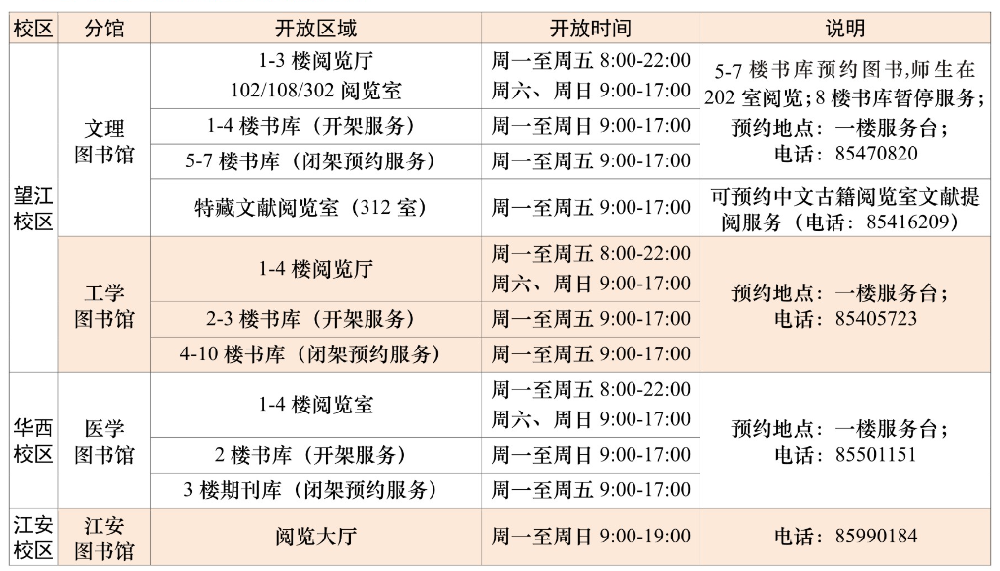

学院通知 · 科研创新
四川大学图书馆2025-2026学年寒假开放与服务安排
发布时间：2026-01-15 00:00:00
亲爱的老师和同学们： 根据学校《关于2025-2026学年寒假工作安排有关事项的通知》（川大校〔2026〕2号）精神，结合图书馆实际运行情况， 寒假期间图书馆开放时间及服务安排通知如下，请广大师生周知并合理安排学习与科研活动。 一、总体安排 2026年1月28日至3月4日，图书馆执行寒假服务时间。2月15日至2月23日春节放假闭馆，因春节放假调整后的周末（2月14日、2月28日）按照周一至周五开放时间开放。 二、各校区分馆开放时间及服务安排 三、专项服务安排 （一）图书通借通还与预约服务 寒假期间继续提供文理、工学、医学、江安四馆之间的图书预约与通借通还服务，方便跨校区师生使用资源。 （二）部分服务暂停 1.研讨室：文理、工学、医学、江安图书馆所有研讨室（含单人研习间）均暂停开放。 2.江安文科楼储备库：暂停现场预约服务。 3.馆际互借与文献传递：暂停与其他高校图书馆之间的服务。 四、毕业离校手续办理 寒假期间图书馆继续提供毕业离校相关手续办理。办理前请致电咨询，确认相关事宜。 1.办理时间：周一至周五9:00-17:00 2.办理地点及咨询电话 文理图书馆：一楼服务台（电话：85470820） 工学图书馆：一楼服务台（电话：85405723） 医学图书馆：一楼服务台（电话：85501151） 江安图书馆：一楼人工服务区（电话：85990184） 更多详情请见“毕业离校办理”（ https://lib.scu.edu.cn/engine2/general/more?appId=12172135&websiteId=949080&wfwfid=23112&pageId=2299562&typeId=32547799¤tBranch=1 ）。 五、科技查新与查收查引服务 1.24小时线上接受委托，查新系统地址： https://chaxin.scu.edu.cn/ 2.报告领取与咨询服务时间： 周一至周五9:00-17:00 3.服务地点及联系电话： 工学图书馆办公点：85402225 医学图书馆办公点：85503206 六、网络与数字资源服务 图书馆提供7×24小时网上数字资源服务，不在校园网内的师生可通过以下方式访问校内资源： “大川为朋”校外访问系统： https://lib.scu.edu.cn/xiaowai/xw.html 四川大学WebVPN系统: https://webvpn.scu.edu.cn 七、其他注意事项 1.寒假期间到期的图书和到馆的预约图书取书时间统一顺延至 2026年3月16日。 2.欢迎广大师生对图书馆工作提出宝贵的意见和建议，可发邮件至馆长信箱： library@scu.edu.cn 。 衷心感谢各位老师和同学长期以来对四川大学图书馆的关心与支持！ 祝大家新春愉快，阖家幸福，万事如意！ 四川大学图书馆 2026年1月15日
